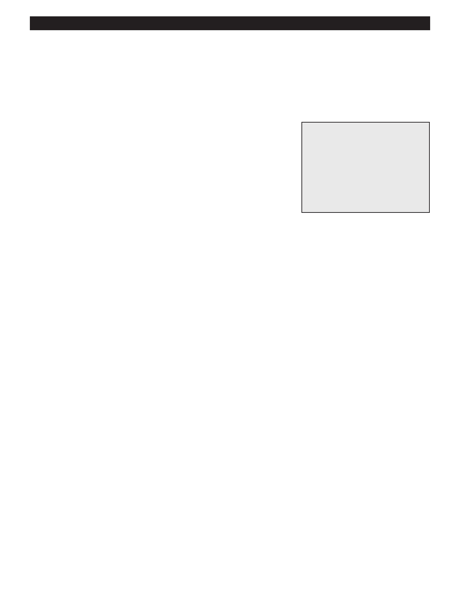

PA RT I C I PA N T R E S O U R C E G U I D E
Testing and Replacing Dryer Thermostats
Dryers use several thermostats to control the various drying temperatures. The
thermostats are usually located just past the exhaust from the cylinder. They are
elliptical in shape and under two inches long.
Safety
Tools and Materials Needed
Make sure the power to the dryer is off.
Lockout/tagout plug cover
Use lockout/tagout procedures.
Screwdriver
Insulated combination tool
Wear eye protection when working with electrical parts.
Multimeter
Putty knife
Thermostats
How-to Steps
1. Allow dryer to cool to room temperature.
2. Unplug dryer or turn off electricity to dryer at main electrical panel.
3. Lockout/tagout the cord or panel.
4. Open dryer housing. Use the putty knife to gently pry it free, if necessary.
5. Locate the dryer thermostat.
6. Pull the wire connectors to disconnect the wires.
7. Use multimeter on RX1 setting to test:
• Touch one probe to one terminal and the other probe to the other terminal.
• The display should show zero (at room temperature). If not, replace thermostat.
8. Install thermostat.
9. Turn on electricity to dryer.
10. Turn on dryer and check operation.
Notes:
22